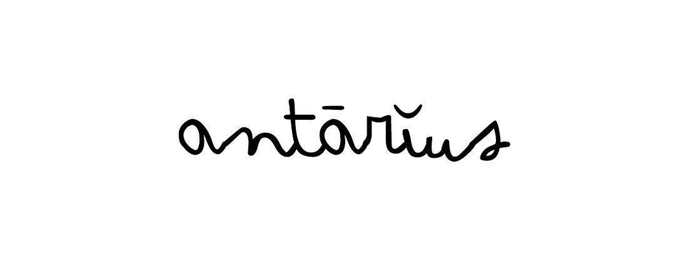
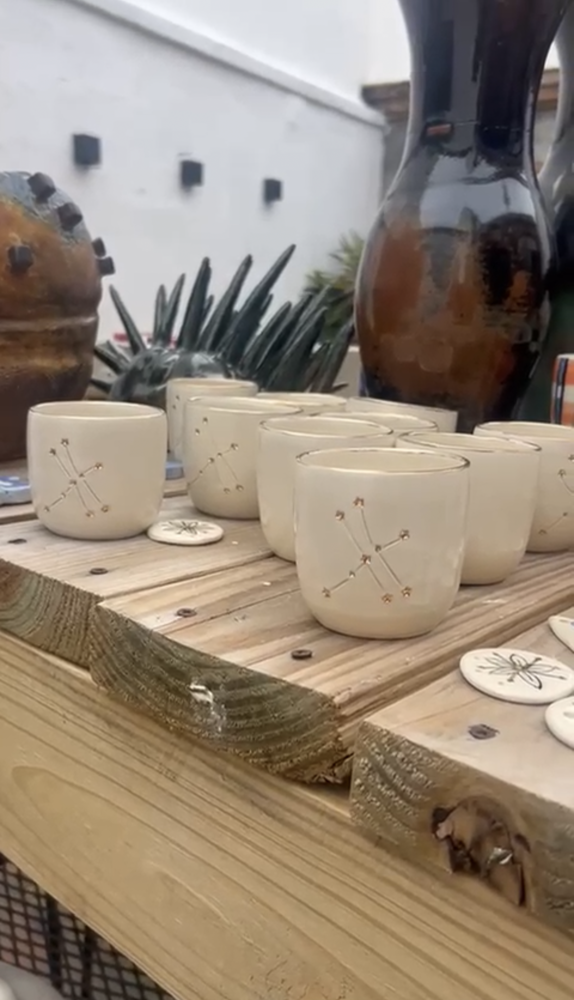

Ceramiche Antārĭus
“Una luce che diventa costellazione, perché la luce, più la si vede e più si moltiplica.”

Ceramiche Antārĭus
Ulakasha inizia il suo primo passo nel mondo della ceramica con la collezione Antarius.
Abbiamo voluto partire dalla terra per onorare il ricordo del luogo in cui noi esseri umani abbiamo deciso di vivere per muovere i nostri passi evolutivi, dandoci la possibilità di ritrovare la nostra vera natura, muovendo ogni passo.
La tazza Antārĭus è stata creata da Palma Viva, un piccolo laboratorio del Messico, dove la natura vibra nel vento e gli uccelli fanno il loro canto.
Le donne che creano queste ceramiche hanno accolto questo progetto con il cuore colmo di entusiasmo, comprendendone il significato profondo e cercando di trasferirlo nella terra che hanno modellato, cotto e dipinto.
Antarius è una parola latina, arrivata dall’etere come tutte le parole di Ulakasha, e significa “di sostegno”.
Ascoltando la vita, osservando senza giudizio ciò che ci accade, possiamo sentire che c’è una forza che è pronta a guidarci, a sostenerci a respirare con noi.
Questa forza possiamo chiamarla come desideriamo, la sostanza non cambia: è una luce che diventa costellazione, perché la luce, più la si vede e più si moltiplica. Nella costellazione della vita, la luce ci sostiene per navigare nella vita.